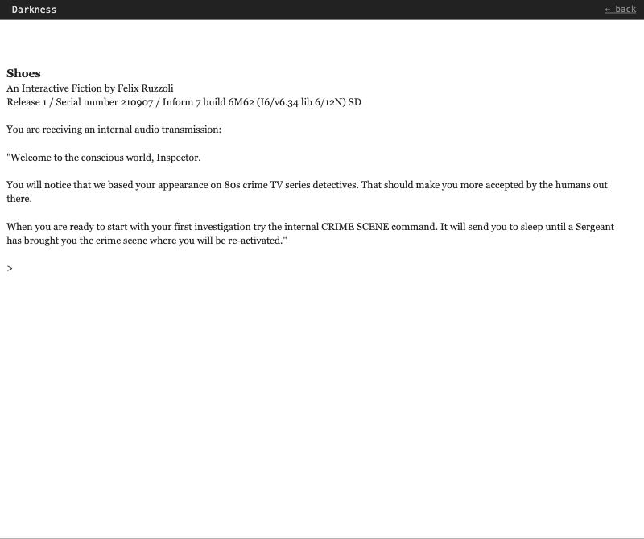

Shoes
Completion ▰▰▰▰▱▱▱▱▱▱ 40% · one case, plays through, unfinished investigation
Shoes is a parser game I wrote with IFComp 2021 in mind, though it never got entered. I wrote it in Inform 7 over a couple of busy weeks at the end of August and early September 2021, including a small Simple Liquids extension so you could pour, poison and analyse drinks.
You are a holographic detective, booted up in a virtual "genesis room" whenever there's a case to solve. This time the victim is Victorio, poisoned in his own kitchen. You poke around with your Sergeant, have him analyse the wine bottle and check the drawers and cheques. Then you switch to the murderer's flat and walk in the killer's shoes, recreating the crime step by step.
The fun part for me was letting the murder happen in more than one way: a poisoned bottle opener, a syringe, or something much less subtle with that opener. It never became a polished release, but the core loop of investigating and then re-enacting works.
Features
- Two-part structure: investigate the crime scene as a hologram inspector, then
change locationinto the murderer and re-enact the crime. - The narration switches from first person present to third person past tense when you become the murderer.
- Lab analysis: ask the Sergeant to
analysesomething and the report shows up in your notebook a few turns later. - Interrogation by topic or by showing things, using per-character reply tables (only Mario has them filled in).
- Poison system with a 4-turn timer, plus stabbing and striking actions driven by a weapon category on every kitchen object.
- Three ways to kill Victorio: a poisoned bottle opener swapped onto the table, a syringe straight into him, or stabbing him with the opener.
- A timed dinner scene: Albert leaves, Mario fetches the wine, Victorio opens and drinks it.
- Bystanders flee in panic after any criminal act.
- My own Simple Liquids extension for wine bottles, glasses, volumes and pouring.
- End screen with exploration, investigation and re-creation scores.
Under the hood
The hologram can only see in the dark what it carries itself, a visibility rule in murder.inform/Source/story.ni:
Visibility rule when in darkness:
if examining something (called the item):
if the player encloses the item or the item is the player:
[say "Light is provided by your own illumination.";]
there is sufficient light;Becoming the murderer flips the whole grammar of the story, same file:
To start the recreation:
Now has recreation begun is true;
make the player the murderer;
now the story viewpoint is third person singular;
now the story tense is past tense;Typing kill gets you told off, because this is a whodunnit with standards:
say "This is a murder mystery. Please, be more specific on how you want to kill your target.[line break][line break]Think about stabbing, striking, choking and shooting.".Choking and shooting were never implemented. And in Extensions/Felix Ruzzoli/Simple Liquids.i7x a volume is a proper Inform unit, which is why the wine bottle holds exactly 25.4 fl oz:
A volume is a kind of value. 15.9 fl oz specifies a volume with parts ounces and tenths (optional, preamble optional).The inspector also gets a cigar, and lighting it is worth a point: "You can feel how you think faster now."
Ideas & inspirations
The intro says it outright: the inspector's looks are "based on 80s crime TV series detectives", with a beige film-noir trench coat, and the end message is "Just one more thing...", which is Columbo. The "walk in the killer's shoes" re-enactment is where the title comes from.
The only planning is a comment block in story.ni under "Part 3 - Notes", half in German, headed [HINTS NEEDED:]: the facts the player should piece together, like "Poisoned the bottle opener", "Used fugu poison", "Made Mario go for the wine" and "Left before the wine was opened". There was also a notes.rtf in the project, but it is empty.
Where it started, where it ended
The first commit on 2021-08-28 already had the Inform project; the second one, "Do we need all this?", was just me adding a .gitignore for Inform's build clutter. The leftover information objects show an earlier idea: a death report about "a Mr. Henry LaVille" at "the famous hotel LaVille". That case got replaced by Victorio's restaurant kitchen, but the old reports are still in the source. Over the next days came the better bottle opener, all the poison killings, then stabbing and an ending on 2021-08-30, and one last "Much better" on 2021-09-07.
State of the repo
Last real commit is 2021-09-07, and it compiles: Inform reports a 7,345-word source with 6 rooms and 72 things. The test scripts (test completion, test alt_poison_1, test alt_stabbing_1) walk through each solution. Half-built bits: the investigation score is shown at the end but nothing ever raises it, only Mario has dialogue, Albert, Paul and the Sergeant have none, Paul's own suspect plot and the hints never got written, and the ending says "You did very well, Inspector" no matter what. The murderer's home is two rooms described as "This is the living room." and "This is the kitchen." I'd say it is about 40% of the competition game I had in mind.
Is it a real game?
Playable demo. There is one case with a beginning, an investigation, a re-enactment and an ending with a score out of 5 for the re-creation. You can't really lose: whatever happens, the night ends and you get congratulated. Knowing what to do, it is ten or fifteen minutes; without hints, you'll spend most of that guessing what the game wants.
Screenshots


Latest updates
- 2021-09-07 Much better
- 2021-08-30 Adding stabbing and testing and an end game state
- 2021-08-29 Now all poison killings are possible
- 2021-08-29 Better bottle opener
- 2021-08-28 Do we need all this?
- 2021-08-28 First commit